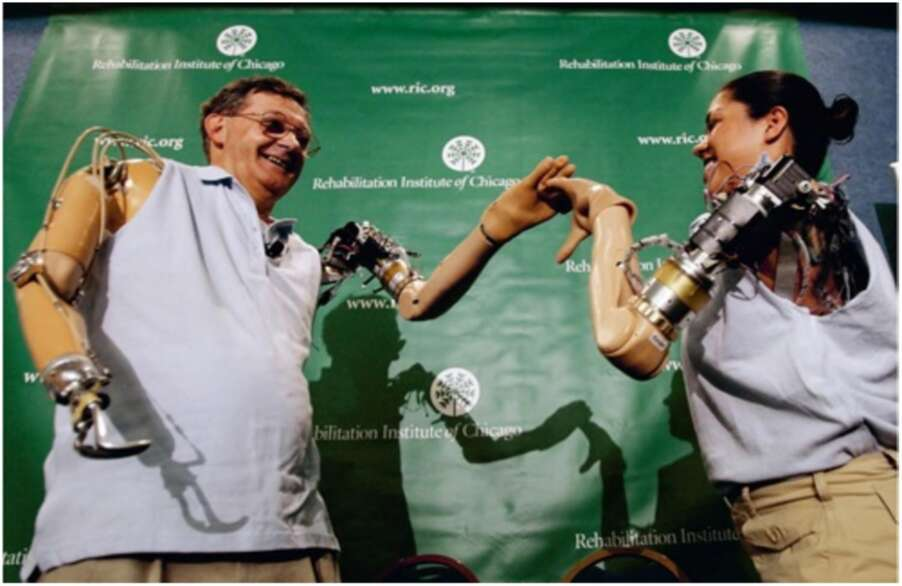

47. Jesse Sullivan and Claudia Mitchell holding hands. The amazing thing about their bionic arms is that they are operated by thought. At present these bionic arms are a poor replacement for our organic originals, but they have the potential for unlimited development. Bionic arms, for example, can be made far more powerful than their organic kin, making even a boxing champion feel like a weakling. Moreover, bionic arms have the advantage that they can be replaced every few years, or detached from the body and operated at a distance. Scientists at Duke University in North Carolina have recently demonstrated this with rhesus monkeys whose brains have been implanted with electrodes. The electrodes gather signals from the brain and transmit them to external devices. The monkeys have been trained to control detached bionic arms and legs through thought alone. One monkey, named Aurora, learned to thought-control a detached bionic arm while simultaneously moving her two organic arms. Like some Hindu goddess, Aurora now has three arms, and her arms can be located in different rooms — or even cities. She can sit in her North Carolina lab, scratch her back with one hand, scratch her head with a second hand, and simultaneously steal a banana in New York (although the ability to eat a purloined fruit at a distance remains a dream). Another rhesus monkey, Idoya, won world fame in 2008 when she thought-controlled a
